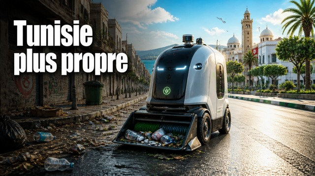
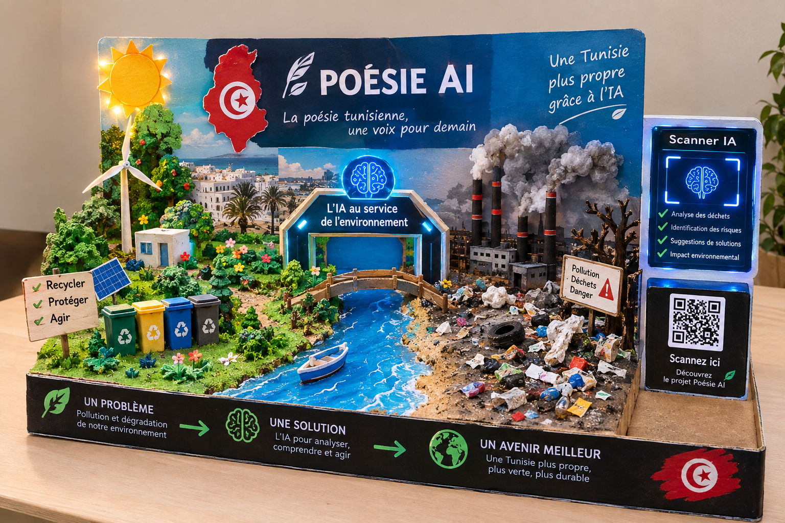
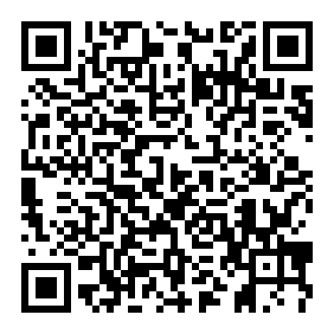

🧠
Comprendre
L'IA propose une lecture simple du thème, des émotions et des symboles d'un texte ou d'une image liée à la poésie.
Une expérience numérique qui aide les jeunes à découvrir, comprendre et transmettre le message des poètes tunisiens grâce à l'IA.

INNOVATION • ENVIRONNEMENT • IA
Une vision futuriste où l’intelligence artificielle aide à réduire les déchets et à construire des espaces publics plus propres.

Le robot présenté dans cette création symbolise une solution intelligente capable d’identifier les déchets, de participer au nettoyage et d’encourager le tri.
Une maquette interactive qui représente le problème de pollution, la solution basée sur l’intelligence artificielle et notre vision d’une Tunisie plus propre et plus durable.

NOTRE IDÉE
L'IA propose une lecture simple du thème, des émotions et des symboles d'un texte ou d'une image liée à la poésie.
Le message poétique devient une expérience visuelle à travers des ambiances, mots-clés et cartes d'émotions.
Une interface claire, multilingue et accessible aide un public plus large à découvrir le patrimoine littéraire tunisien.
POÈTES TUNISIENS
Sa poésie est souvent associée à l'espoir, la volonté, la liberté et la force de vivre. Le projet s'inspire de ces valeurs sans reproduire l'œuvre.

Une image réelle de Tozeur sert de point de départ pour relier paysage, identité, mémoire et inspiration poétique.

Le patrimoine visuel tunisien peut devenir une porte d'entrée vers l'écriture, la mémoire et la création contemporaine.
SCANNER IA
Prototype pédagogique : l'analyse affichée simule le fonctionnement d'un futur modèle IA.
Ajoute une image pour obtenir une interprétation poétique interactive.
EXPÉRIENCE INTERACTIVE
Choisis une ambiance pour voir comment un même paysage peut transmettre plusieurs lectures poétiques.
Un paysage lumineux devient un symbole de continuité : le passé nourrit la création du futur.
ASSISTANT IA
PHOTOGRAPHIES RÉELLES


ACCÈS RAPIDE
Une fois le projet publié sur GitHub Pages avec le dépôt poesie-ai, ce QR Code ouvre directement le site.
malekchallouf007-ai.github.io/poesie-ai/

POÉSIE AIUne séquence vidéo intégrée à l'expérience pour donner une dimension audiovisuelle au message du projet.
Vidéo fournie pour le projet.
Une création originale inspirée de l’attachement à la Tunisie, à sa terre, à sa mémoire et à son avenir. Le texte ci-dessous est inédit et peut servir de support à l’expérience IA.
Terre de mémoire, de lumière et d’espoir.
Ya Tounes el khadhra, ya terre qui nous rassemble,
dans tes rues la mémoire avance et le rêve ressemble.
Entre la mer et les oliviers, ton histoire nous appelle,
et chaque voix porte un espoir nouveau sous ton ciel.
Nous gardons tes mots, tes couleurs et tes traces,
pour bâtir demain sans oublier nos racines et nos places.
Ya Tounes, notre mémoire devient lumière,
et notre jeunesse écrit une nouvelle page, fière.
Découvrez notre vision pour une Tunisie plus propre grâce à l’intelligence artificielle.